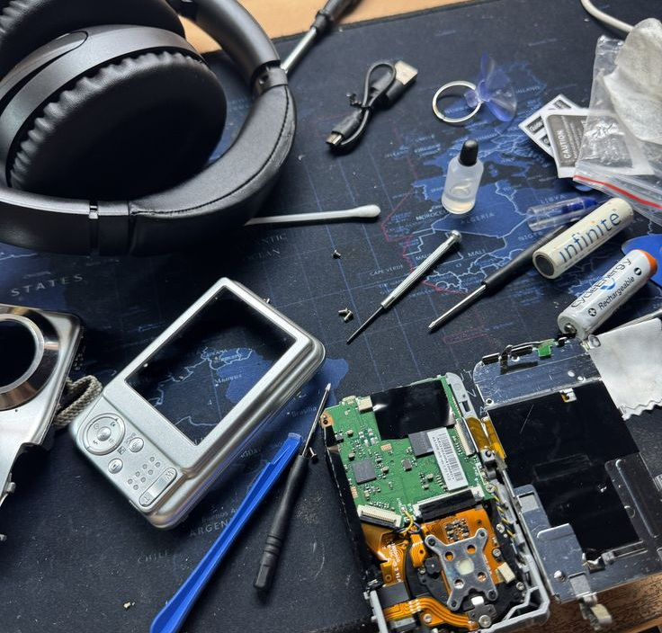

1
เลือกสิ่งของและอาการเสีย
เลือกประเภทสิ่งของและอาการที่เกิดขึ้น เพื่อให้ระบบระบุความต้องการได้ตรงจุด
ค้นหาช่างซ่อมที่เหมาะกับสิ่งของของคุณ พร้อมสนับสนุนช่างในชุมชน

เลือกประเภทสิ่งของและอาการที่เกิดขึ้น เพื่อให้ระบบระบุความต้องการได้ตรงจุด
ดูผลลัพธ์ที่จัดเรียงตามความถนัดและพื้นที่ให้บริการที่เกี่ยวข้อง
เลือกวันที่เวลา และยืนยันการนัดหมายแบบจำลองก่อนเข้าสู่ขั้นตอนต่อไป
Find2Fix ช่วยให้คุณค้นหาช่างที่มีความเชี่ยวชาญเฉพาะทางและสามารถให้บริการในบริเวณที่คุณต้องการได้ทันที
แพลตฟอร์มนี้ออกแบบมาเพื่อให้ช่างที่มีทักษะสามารถถูกพบและได้รับงานซ่อมจากคนในพื้นที่ได้ง่ายขึ้น
การซ่อมทำให้สิ่งของยังคงใช้งานได้ต่อ จึงช่วยลดการทิ้งขยะและต่ออายุประโยชน์ของทรัพย์สิน
การเลือกซ่อมก่อนซื้อใหม่เป็นทางเลือกที่เหมาะสมสำหรับสิ่งของเล็ก ๆ หรือชิ้นส่วนที่ยังใช้งานได้ในระดับหนึ่ง